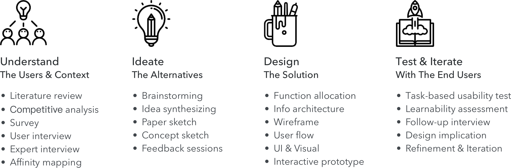

The application is meant to help emerging adults, those in their early to mid-twenties, reflect on the purchases they make to increase mindfulness of spending habits and allow them to make small changes overtime to improve their financial condition. This application will let you evaluate and categorize your purchase a short time after your purchase, and will encourage you to reflect on that purchase again a day, a week, or a month later depending on your preferences.
INFO
Category
- HCI Foundations Group Project @ Georgia Tech
Duration
- Aug. 2017 - Dec. 2017
Keywords
- UCD Process, User Research, Finance, Mobile App
Team
- Jason Paul, Michelle Ma, Sijia Xiao, Tony Jin
Research Methods
- Literature Review, Competitive Analysis, Survey
Semi-structured Interview, Task-based Usability Testing
Tools
- Paper and pen, Sketch, Balsamiq, InVision, Photoshop

PROCESS
MY ROLE
Research
- Conducted the competitive analysis; designed the survey and interview; conducted semi-structured interview.
Design
- Led the design phase including ideation, concept design and development; designed the user interface and crafted the interactive prototype; led the iteration.
Usability Testing
- Designed and moderated the task-based user testing session; qualitative data analysis, design refinement.